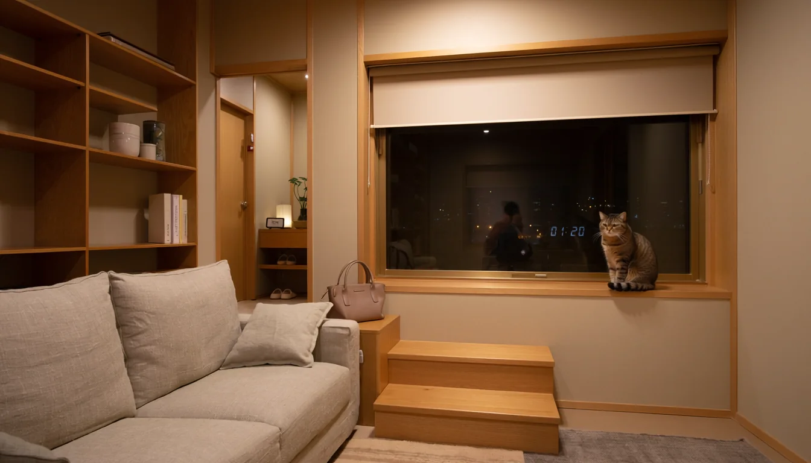
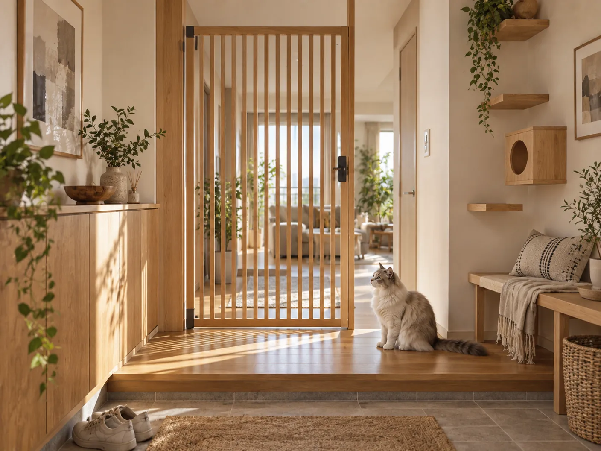
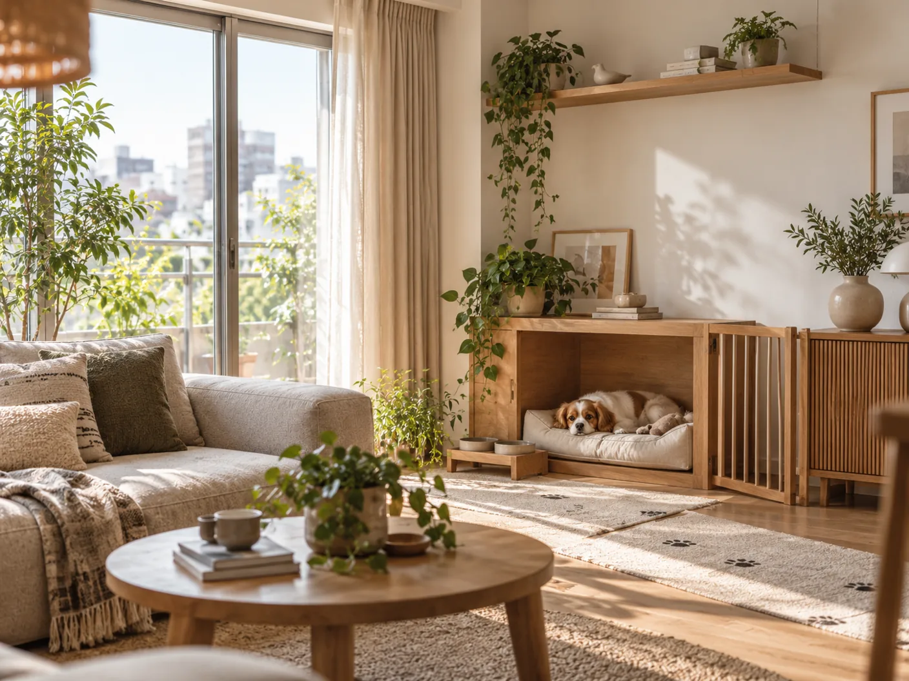

好きなテイストを、そのまま。
家具の色や素材になじむ既製品を比較。ペット用品だけが浮かない組み合わせを考えます。
HOME AFTER HOURS
好きな部屋も、この子の心地よさも。
お気に入りのソファも、帰宅後の静かな時間も。
猫や犬の居場所を、今の部屋になじませる。
見た目と過ごし方を、一緒に考える空間プランです。
既製品の組み合わせから、取り付け前の確認まで。
大がかりに変えず、ひとつの場所から。

遅く帰った夜、ようやくほどける時間。好きなインテリアの中に、この子の居場所もある。そんな部屋を、今ある家具から考えます。
pethomeが整えたいのは、見た目だけではありません。留守のあいだの過ごし方も、帰宅後の動線も。商品選びと設置前の確認を、一つの計画にまとめます。
家具の色や素材になじむ既製品を比較。ペット用品だけが浮かない組み合わせを考えます。
水、トイレ、休む場所と人の通り道。見守りの段取りも含めて、先に整理します。
壁の条件や規約、取り付け先への確認事項まで。正式提供時は、私たちが整理して引き継ぐ方針です。
窓辺、玄関、ソファの隣。まずは一つの場所から。今ある家具になじむ既製品と、必要最小限の設置を中心に計画します。

窓辺に、この子の特等席。
いつもの窓辺を、眺めのある居場所に。
既製ステップやウォークを、窓と既存家具のつながりで置く。高い場所を一律に増やしません。
年齢や体格、普段の動きを聞いて候補を絞ります。壁面固定は現地確認が前提です。補強が必要なら、工事を増やす前に別の配置や自立式も検討します。
この入口でチェックする
「ただいま」に、ひと呼吸。
荷物を置く余白も、猫の居場所も。
猫用ゲートと収納を、扉の動きに合わせて。インテリアの雰囲気と、出入りのしやすさを一緒に考えます。
犬用ゲートを猫に流用する前提にはしません。飛び越えやすり抜けを完全に防ぐ保証ではありません。
この入口でチェックする
私の隣に、もう一つの居場所。
ソファの隣で、それぞれにくつろぐ。
サークルやベッド、ゲート、置き敷きマットを別々に増やさない。
屋外の犬小屋を置くだけでなく、室内の居場所から考えます。床の全面張り替えは初期の標準メニューに含めません。滑りの完全な防止は保証しません。
この入口でチェックする新築設計、大規模造作、屋外ドッグラン、外壁工事、給排水、床の全面張り替えは初期の標準対象外です。マンション・賃貸は施工条件と許可を先に確認します。
掲載画像は暮らしの雰囲気を伝える生成イメージです。特定の既製品や標準プランの納品内容を正確に再現したものではありません。実際の商品と配置は条件確認後に選びます。
部屋の雰囲気は、あきらめなくていい。猫が休む窓辺も、犬が眠るソファの隣も、インテリアの一部として考える。
そのうえで、素材のお手入れ、扉の開閉、留守のあいだの過ごし方まで整理します。心地よく見えることと、実際に使いやすいことを、別々にしません。
正式提供時は、商品・配置の提案から、施工店に引き継ぐ確認メモまで整える方針です。購入を急がず、条件がそろってから進めます。
ペット、間取りの単位、総予算、留守の長さを確認する。
商品が決まっている人と、組み合わせから考えたい人で進め方を分ける。
不向きな条件は、個別プランに進む前に返す。
必要な場合だけ、有料の空間プランを提案する。
配置の意図、商品候補、数量、費用項目、現地確認事項を1枚にまとめる。
納品物・修正回数・納期・費用は申込前に提示する。
施工店が下地と寸法を確認し、正式な工事内容と見積を出す。
同意してから商品手配・工事契約へ進む。
すでに買った商品は、取扱説明書と取付部品の有無も確認する。取り付けできるとは限りません。
正式料金と提供地域は準備中です。以前の検証用価格は販売価格として使いません。現在、有料サービスの申込みは受け付けていません。
pethomeが担当する提案と資料作成。
メーカー・販売店の価格と購入条件。
施工店の見積。補強・補修・出張は別途確認。
好きな色や素材、今ある家具との相性から比較する参考候補です。提携・販売代理ではありません。在庫・仕様・取付条件は公式情報で確認が必要です。
参考商品を読み込んでいます。
配置の意図を書く人と、壁の中を見る人は分けます。
初期は東京近郊での展開を検討中です。施工店の提携は準備中で、現時点で特定の業者を紹介しません。
買う前・頼む前に
メーカーのサービスで足りる場合もあります。pethomeは複数メーカーの商品と今ある家具を比較し、人の動線、手入れ、予算、留守番、施工前の確認を一つの計画にします。単品を置くだけなら、個別の空間プランは不要です。
できます。ただし先に管理規約と、貸主・管理会社への確認事項を整理します。自立式や置き敷きでも、床への影響・転倒・使用条件の確認は必要です。「穴を開けない＝無条件に設置できる」とは案内しません。
できません。写真と採寸は配置候補を考えるための情報です。壁の下地、内部配線、固定方法は施工店の現地確認が必要です。商品購入を先に確定しないことをおすすめします。
設置条件を確認したあと、販売店から購入するか、施工店が見積に含めて手配する形を想定しています。購入者、初期不良・不足部品の連絡先、送料、返品条件を先にそろえます。
初期は室内の居場所、ゲート、置き敷きマットの組み合わせが中心です。屋外の犬小屋やドッグラン、床の全面張り替え、給排水・外壁工事は標準メニュー外です。
年齢だけでなく、体格、動き方、行動の変化を確認します。高い場所や段差を一律に増やす提案はしません。治療や身体機能の評価は対象外です。
部屋の配置で負担を減らせる範囲を先に切り分けます。水、トイレ、休む場所、玄関のすき間、コード類。配置だけでは足りない場合は、預け先や同居人の有無を先に確認する入口を返します。長時間の単独留守番を推奨するサービスではありません。
現在はサービス準備中です。個別相談、写真送信、施工申込、決済は受け付けていません。下のチェックでは、個人情報を送らずに検討の入口を整理できます。
提供準備中
ただいま、サービス準備中です。相談・工事の申込み、写真の受付、決済は行っていません。
受付を開始する際は、このページの表示を更新します。